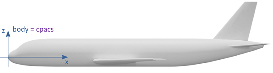
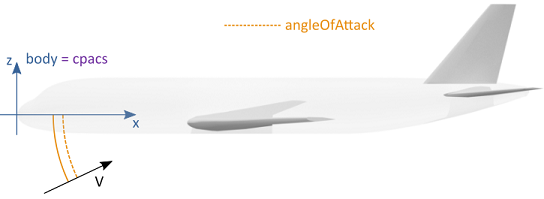
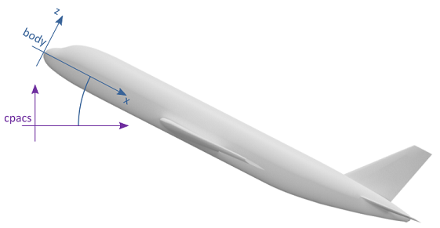
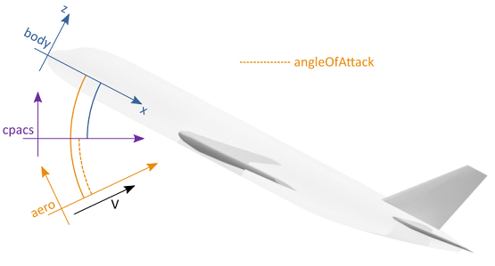
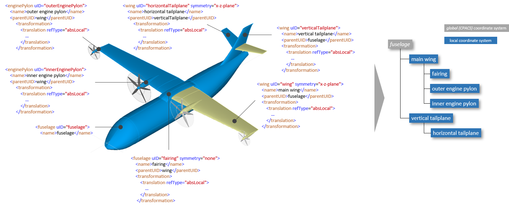

3.1. CPACS coordinate system
Coordinate systems are a regular cause for ambiguous interpretation of data. In CPACS, the reference coordinate system is the CPACS-coordinate system. This coordinate system is used for most of the data. A single exception is made in order to keep aerodynamic data in an aerodynamic coordinate system. The following paragraphs outline the determination to known coordinate systems.
The CPACS coordinate system is the coordinate system identified by TiGL, CPACS's geometry library. It is a right-handed coordinate system. If an aircraft is defined in the CPACS coordinate system it will usually follow the directions listed in the table below.
Therefore, the CPACS coordinate system can be confused with the body-fixed coordinate system. While often the CPACS coordinate system and the body-fixed coordinate system overlap, this must not always be true. Several definitions for body-fixed coordinate systems exist (x-axis through nose and tail, x-axis perpendicular to nose plane). For non-symmetric aircraft, body-fixed coordinate systems become even more complicated. Hence, analysis tools should stick to the CPACS coordinate system. It remains to the designer to model the geometry accordingly.
The CPACS coordinate system does not rotate with flow. Hence, aerodynamic calculations do rotate their flow relative to the CPACS coordinate system. If not stated explicitly different, e.g. for target lift-coefficients, results are returned in the CPACS coordinate system, i.e. the cfx-coefficient is parallel to the CPACS x-coordinate, regardless of the way the geometry is defined.
The following table gives a "best-practice" advice on how to locate a geometry within CPACS. Different approaches are, of course, valid as well.
| Axis | Direction | Description |
| x | tailwards | from nose to tail |
| y | spanwise | from symmetry plane to the right wingtip |
| z | upwards | from landing gear to tip of vertical tailplane |
The following figures show an example of a geometry that is aligned with the CPACS coordinate system, i.e. the body-fixed coordinate system corresponds to the CPACS coordinate system.

The aerodynamic analysis is relative to the CPACS coordinate system. That is, the angle of attack is represented by the dashed orange line. Results of the aerodynamic calculation are given in the CPACS coordinate system.

The following figures give an example of a geometry that is not defined in alignment with the CPACS coordinate system. It is a valid CPACS file, but only used in this example for demonstrative purposes.

The body axes and the CPACS coordinate system do not align. That is, the origin of the geometry is not at CPACS (0,0,0) but at a point in positive x- and z-direction.

Again, the aerodynamic analysis is relative to the CPACS coordinate system. That is, the angle of attack is represented by the dashed orange line. Results of the aerodynamic calculation are given in the CPACS coordinate system.
3.2. Local coordinate systems via parentUID and transformation
Some elements in CPACS, in particular the geometric components, are described in local coordinates. The hierarchical data structure allows to define a local coordinate system either with respect to the coordinate system of the parent element or with respect to the global CPACS coordinate system. This is achieved by combining the two elements <parentUID> and <transformation>:
parentUID: An individual data hierarchy can be set up using the optional <parentUID> element. Here it is important that exactly one element does not contain the <parentUID> in order to identify the top element of this user-specific hierarchy. As soon as the parentUID (which refers to the uID of the parent element) is set, a local coordinate system of the corresponding node is instantiated.
transformation: This allows the coordinate system to be transformed via <translation>, <rotation> and <scaling>. As soon as the <parentUID> is set, this transformation refers to the local coordinate system (in the current CPACS version this only affects <translation>). An attribute refType is used to either make this explicit (refType="absLocal") or to override this and reference the global CPACS coordinate system instead (refType="absGlobal").
The following table summarizes the possible combinations of <parentUID> and <transformation> and the resulting coordinate system (local or global):
<parentUID> not set | <parentUID> set | |
<transformation> without refType | global | local |
<transformation> with refType="absLocal" | global | local |
<transformation> with refType="absGlobal" | global | global |
Note: The combination of <transformation> with refType="absLocal" and no <parentUID> is global, because the local coordinate system to which the transformation is referring to via refType equals the global coordinate system (see fuselage in the following example).
An exemplary use case further illustrates the concept of the coordinate system hierarchy. The CPACS schema shall not specify in advance that a wing is always be part of the fuselage and engines must always be part of the wing. In other cases the engine could be attached to the fuselage, which would not be possible via a predefined XML tree. The following figure shows how components of the aircraft are related to each other via the <parentUID>. The fairing is a child of the wing and is therefore automatically translated when the wing is translated. Likewise, the horizontal tailplane is a part of the vertical tailplane and is therefore affected by translation of the latter:
